Empire Stone × Empire Granite — QA
Golden Path — BOQ ค่าแรง/วัสดุเป็นรายการ ถึง P&L
อัปเดตล่าสุด: 3 พฤศจิกายน 2569 (2026-11-03) · รันจริงบน eg-tst ผ่านหน้าจอ ใช้ผู้ใช้ emgdemo บริษัท Empire Granite
ค่าแรงติดตั้งและวัสดุสิ้นเปลืองเป็นบรรทัดของตัวเองใน BOQ (เลือกจากรายการสินค้า ไม่มีชุดค่าแรง/ชุดวัสดุแล้ว) · นำเข้า Excel · ใบเสนอราคา · ผลิตหิน 2 ใบสั่งผลิต · ต้นทุนแบ่งตามสัดส่วนที่ผลิตจริง · ส่งของ · ใบแจ้งหนี้ · กำไรของ BOQ ใบนี้ · เฉพาะ happy path ไม่มีเคสกรอกผิด
16Test Case ทั้งหมด
6หมวด
16High Priority
0Medium Priority
0Low Priority
ชุดใหม่แทน "BOQ เส้นทาง 3: สร้าง BOQ เอง + ชุดค่าแรง/วัสดุ" (ย้ายชุดเดิมเข้า Archived แล้ว)
- ทำตามทีละขั้นด้วย คู่มือกดตาม BOQ ค่าแรง/วัสดุเป็นรายการ ถึง P&L (มีเหตุผลของแต่ละค่าที่กรอก) · เอกสารนี้ใช้ตรวจว่าผลตรงตามที่ควรเป็น
- ต้องทำ คู่มือกดตาม Setup ระบบ ตอน 2 มาก่อน (มีสินค้า ZZ2 GUIDE MARBLE Countertop, ZZ ค่าแรงติดตั้งพื้น, ZZ กาวและปูนยาแนวปูพื้น และหมวด FIFO + Perpetual) และมี Slab ZZ2 GUIDE MARBLE ที่ Available อย่างน้อย 4 แผ่น
- ขอบเขต 16 เคส: ตั้งประเภทรายการ 2 · นำเข้า BOQ 3 · ใบเสนอราคา 2 · ผลิต 3 · ต้นทุนแบ่งตามสัดส่วน 3 · ส่งของ ใบแจ้งหนี้ P&L 3
A. ตั้งประเภทรายการค่าแรง/วัสดุ
ระบุว่าสินค้าตัวไหนเป็นค่าแรง ตัวไหนเป็นวัสดุสิ้นเปลือง · 2 test cases
| TC ID | Scenario | Precondition | Steps | ข้อมูลตัวอย่าง | Expected Result | Priority | ภาพหน้าจอ |
|---|---|---|---|---|---|---|---|
| TC-GP-BQ6-01 | ตั้งสินค้าค่าแรงให้เป็นรายการค่าแรงของ BOQ ช่อง ประเภทรายการ BOQ คือช่องเดียวที่ระบบใช้แยกค่าแรง/วัสดุ · Cost ของสินค้าคือต้นทุนที่จะลงบัญชีตอนผลิต ส่วน Sales Price คือราคาในใบเสนอราคา สองช่องนี้เป็นคนละตัวเลข |
เข้าระบบเป็น Empire Granite · มีสินค้า ZZ ค่าแรงติดตั้งพื้น (บริการ หน่วย ตร.ม. Sales Price 1,500 Cost 500) |
|
ประเภทรายการ BOQ = ค่าแรง | บันทึกได้ ช่อง ประเภทรายการ BOQ แสดง ค่าแรง · Sales Price 1,500.00 ต่อ ตร.ม. · Cost 500.00 ต่อ ตร.ม. | High | 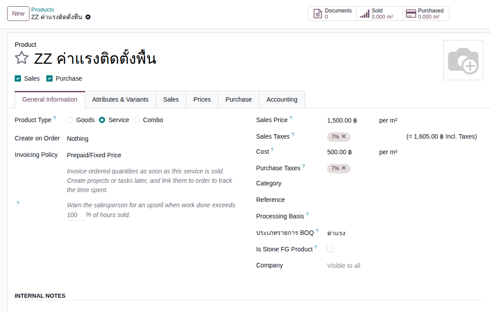 |
| TC-GP-BQ6-02 | ตั้งสินค้ากาวและปูนยาแนวให้เป็นรายการวัสดุสิ้นเปลืองของ BOQ | มีสินค้า ZZ กาวและปูนยาแนวปูพื้น (Goods หน่วย ตร.ม. Sales Price 150 Cost 90) |
|
ประเภทรายการ BOQ = วัสดุสิ้นเปลือง | บันทึกได้ ช่อง ประเภทรายการ BOQ แสดง วัสดุสิ้นเปลือง · Sales Price 150.00 · Cost 90.00 ต่อ ตร.ม. | High | 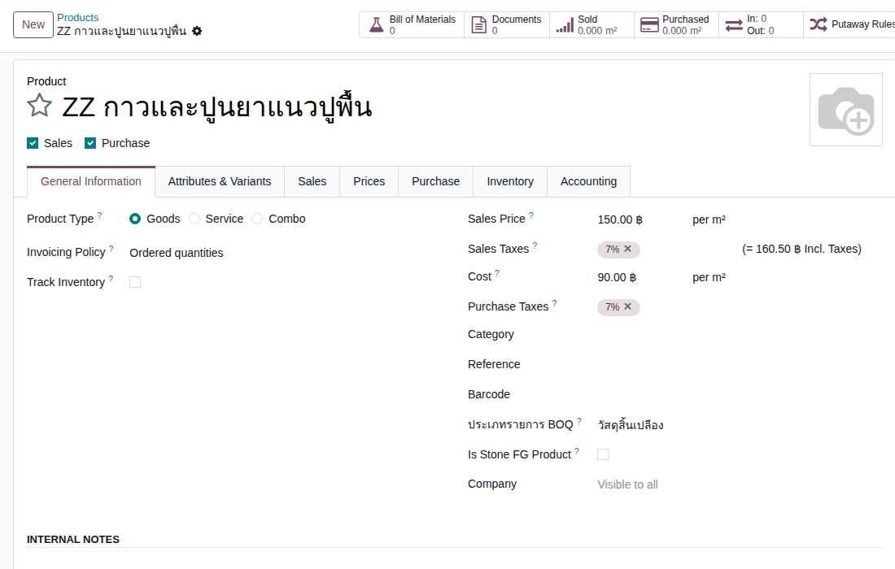 |
B. นำเข้า BOQ จาก Excel
ดาวน์โหลดเทมเพลต อ่านไฟล์ ตรวจหน้าตัวอย่าง แล้วสร้าง BOQ · 3 test cases
| TC ID | Scenario | Precondition | Steps | ข้อมูลตัวอย่าง | Expected Result | Priority | ภาพหน้าจอ |
|---|---|---|---|---|---|---|---|
| TC-GP-BQ6-03 | ดาวน์โหลดเทมเพลต และเห็นรายการค่าแรง/วัสดุใน dropdown ต้องเลือกลูกค้าก่อน ปุ่มดาวน์โหลดเทมเพลตจึงทำงาน · รายการค่าแรง/วัสดุจะอยู่ใน dropdown ก็ต่อเมื่อสินค้านั้นตั้งประเภทรายการ BOQ แล้ว (TC-GP-BQ6-01, 02) และเปิดขายได้ |
ทำ TC-GP-BQ6-01 และ TC-GP-BQ6-02 เสร็จแล้ว |
|
Customer = Demo Hotel Customer | ได้ไฟล์ BOQ-Items-Template.xlsx 2 แผ่น (BOQ Items และ ProductList) · หัวคอลัมน์สินค้า คือ สินค้า (หิน / ค่าแรง / วัสดุ) · ใน ProductList มี ZZ ค่าแรงติดตั้งพื้น และ ZZ กาวและปูนยาแนวปูพื้น ปนกับสินค้าหิน FG | High | 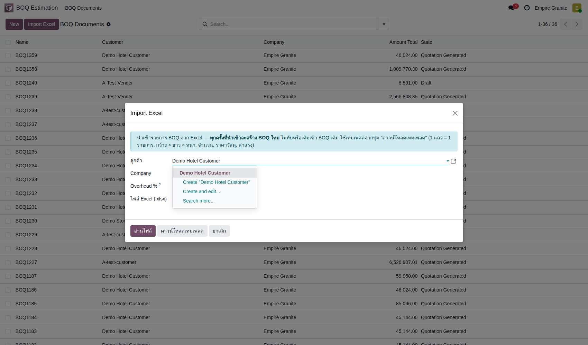 |
| TC-GP-BQ6-04 | อัปโหลดไฟล์ที่มีหิน ค่าแรง วัสดุ คนละแถว และตรวจหน้าตัวอย่าง 1 แถว = 1 ประเภท · ค่าแรงใส่ราคาช่องค่าแรง วัสดุใส่ช่องวัสดุ ไฟล์นี้เว้นว่างทั้งคู่ ระบบจึงใช้ราคาขายของสินค้า · จำนวนของค่าแรง/วัสดุผู้ใช้กรอกเอง (12.6 = 7.2 + 5.4 พื้นที่หินทั้งโซน) |
ไฟล์ boq-import-zz2-items.xlsx · มีสินค้า ZZ2 GUIDE MARBLE Countertop (ราคาขาย 3,800 ต่อ ตร.ม.) |
|
แถว 1: ห้องรับรอง · เคาน์เตอร์ · ZZ2 GUIDE MARBLE Countertop · 60 × 120 × 2 ซม. · 7.2 ตร.ม. · แถว 2: ท็อปโต๊ะเสริม · 60 × 90 × 2 · 5.4 ตร.ม. · แถว 3: ZZ ค่าแรงติดตั้งพื้น · 12.6 ตร.ม. · แถว 4: ZZ กาวและปูนยาแนวปูพื้น · 12.6 ตร.ม. · แถว 5: ค่าขนส่งและติดตั้ง (ไม่เลือกสินค้า) · 1 ชิ้น · ราคาวัสดุ 8,000 | หน้าตัวอย่างไม่มีแถวแดง · จำนวนรายการ 5 · วัสดุรวม 57,770.00 · ค่าแรงรวม 18,900.00 · Overhead รวม 7,667.00 · รวม (ก่อนค่าบริหารโครงการ) 84,337.00 · แถวค่าแรง วัสดุ/หน่วย 0.00 ค่าแรง/หน่วย 1,500.00 · แถวกาว วัสดุ/หน่วย 150.00 ค่าแรง/หน่วย 0.00 | High | 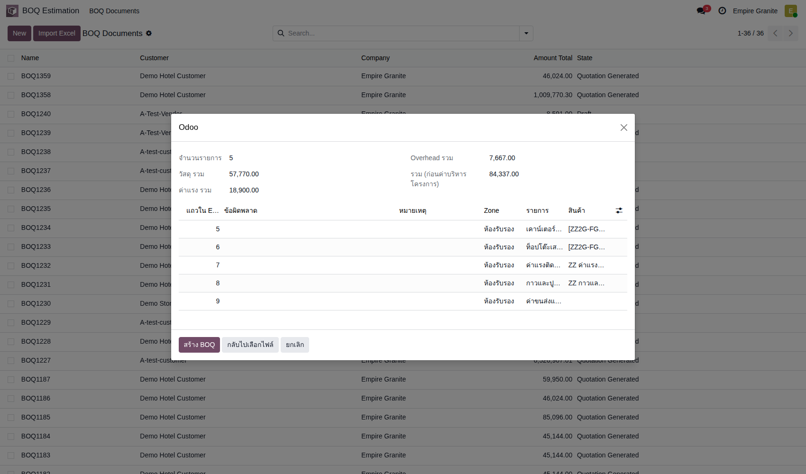 |
| TC-GP-BQ6-05 | สร้าง BOQ จากไฟล์ และตรวจบรรทัดค่าแรง/วัสดุ ทุกครั้งที่นำเข้าได้ BOQ ใบใหม่ ไม่ทับหรือเติมเข้า BOQ เดิม · ไม่มีชุดค่าแรง/วัสดุ และไม่มีปุ่มสร้างอัตโนมัติ · ยอด Direct Cost ใน BOQ เป็นราคาตั้งขาย ไม่ใช่ต้นทุนจริง |
ทำ TC-GP-BQ6-04 เสร็จแล้ว (หน้าตัวอย่างยังเปิดอยู่) |
|
- | ได้ BOQ ใหม่ (รอบทดสอบ BOQ1498) ลูกค้า Demo Hotel Customer · 5 บรรทัด: หิน 7.20 → 27,360.00 · หิน 5.40 → 20,520.00 · ZZ ค่าแรงติดตั้งพื้น 12.60 × 1,500.00 → 18,900.00 · ZZ กาวและปูนยาแนวปูพื้น 12.60 × 150.00 → 1,890.00 · ขนส่ง 1.00 → 8,000.00 · Amount Direct Cost 76,670.00 · Amount Overhead Profit 7,667.00 · Amount Total 84,337.00 | High |  |
C. ใบเสนอราคา
ออกใบเสนอราคาจาก BOQ · ติ๊ก Sold as Project · 2 test cases
| TC ID | Scenario | Precondition | Steps | ข้อมูลตัวอย่าง | Expected Result | Priority | ภาพหน้าจอ |
|---|---|---|---|---|---|---|---|
| TC-GP-BQ6-06 | สร้างใบเสนอราคาจาก BOQ และตรวจบรรทัดค่าแรง/วัสดุ บรรทัดค่าแรงและวัสดุขึ้นเป็นสินค้าของตัวเอง ไม่ถูกรวมกับบรรทัดหิน · ระบบเพิ่มบรรทัด ค่าบริหารโครงการ 10% ให้เอง |
ทำ TC-GP-BQ6-05 เสร็จแล้ว |
|
- | เปิดใบเสนอราคาใหม่ (รอบทดสอบ S02155) ช่อง BOQ Document ชี้กลับ BOQ1498 · หิน 7.200 m² × 3,800.00 = 27,360.00 (60 × 120 ซม. × 10 ชิ้น) และ 5.400 m² × 3,800.00 = 20,520.00 (60 × 90 ซม. × 10 ชิ้น) · ZZ ค่าแรงติดตั้งพื้น 12.600 m² × 1,500.00 = 18,900.00 · ZZ กาวและปูนยาแนวปูพื้น 12.600 m² × 150.00 = 1,890.00 · ขนส่งและติดตั้ง 8,000.00 · ค่าบริหารโครงการ 7,667.00 · Untaxed 84,337.00 · VAT 7% 5,903.59 · Total 90,240.59 | High | 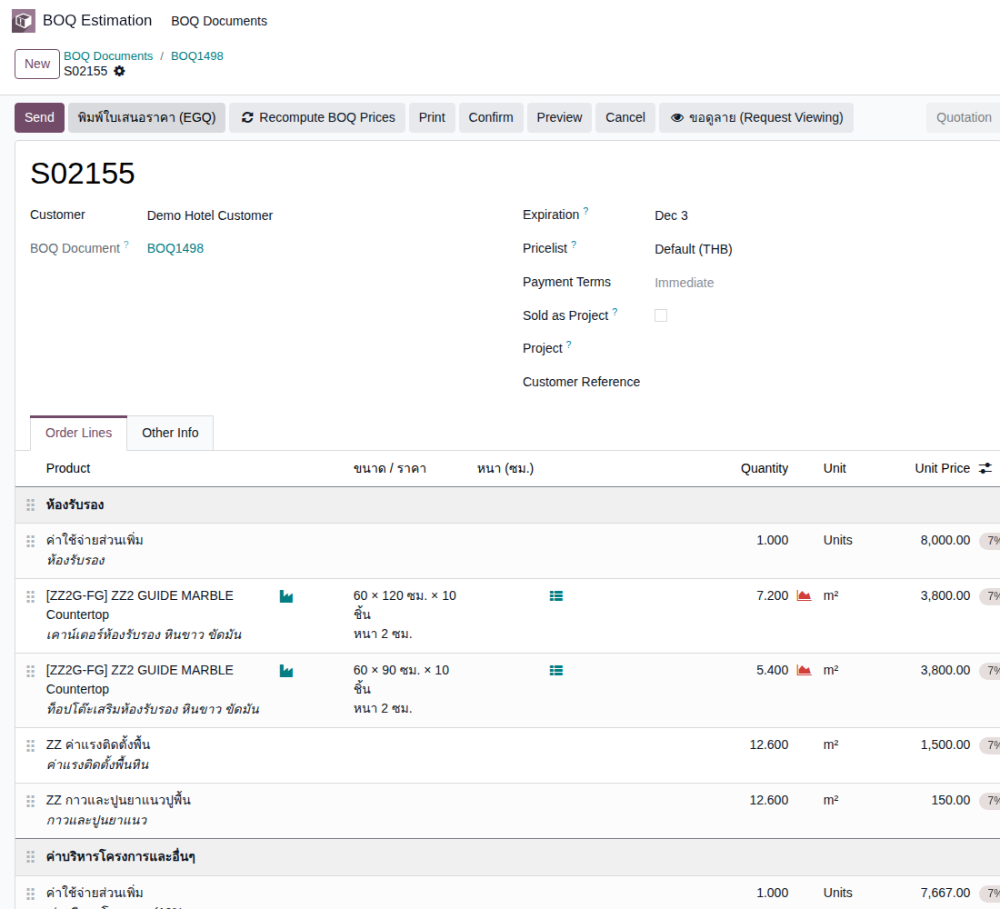 |
| TC-GP-BQ6-07 | ติ๊ก Sold as Project ก่อน Confirm ต้องติ๊กก่อน Confirm เพื่อให้ได้บัญชีวิเคราะห์ของ BOQ ใบนี้ ใช้ดู P&L รายใบ ถ้าลืมติ๊กจะดู P&L รายใบไม่ได้ |
ทำ TC-GP-BQ6-06 เสร็จแล้ว |
|
Sold as Project = ติ๊ก | ช่อง Sold as Project ติ๊กอยู่ · ยอดเดิมไม่เปลี่ยน | High | 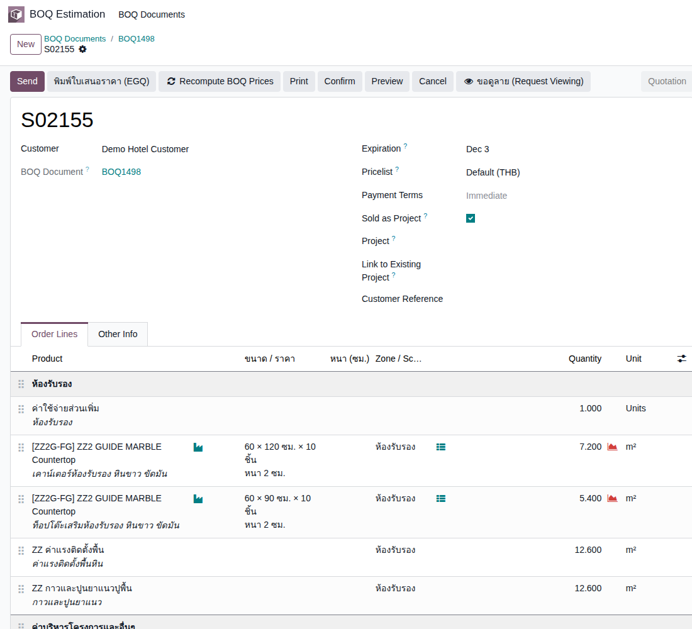 |
D. ยืนยันและผลิตหิน 2 ใบสั่งผลิต
Confirm · ผลิตทีละใบจนเสร็จ · 3 test cases
| TC ID | Scenario | Precondition | Steps | ข้อมูลตัวอย่าง | Expected Result | Priority | ภาพหน้าจอ |
|---|---|---|---|---|---|---|---|
| TC-GP-BQ6-08 | Confirm ใบเสนอราคา แล้วได้ใบสั่งผลิตหิน 2 ใบ ใบสั่งผลิตเกิดเฉพาะบรรทัดหิน · บรรทัดค่าแรง วัสดุ และขนส่งไม่มีใบสั่งผลิต |
ทำ TC-GP-BQ6-07 เสร็จแล้ว · มี Slab ZZ2 GUIDE MARBLE ที่ Available อย่างน้อย 4 แผ่น |
|
- | สมาร์ทปุ่ม Projects 1 · Tasks 4 · Delivery 1 · FG Production 2 · ใบสั่งผลิต EG01/STFG/00610 (7.200 m²) และ EG01/STFG/00611 (5.400 m²) สถานะ Draft | High | 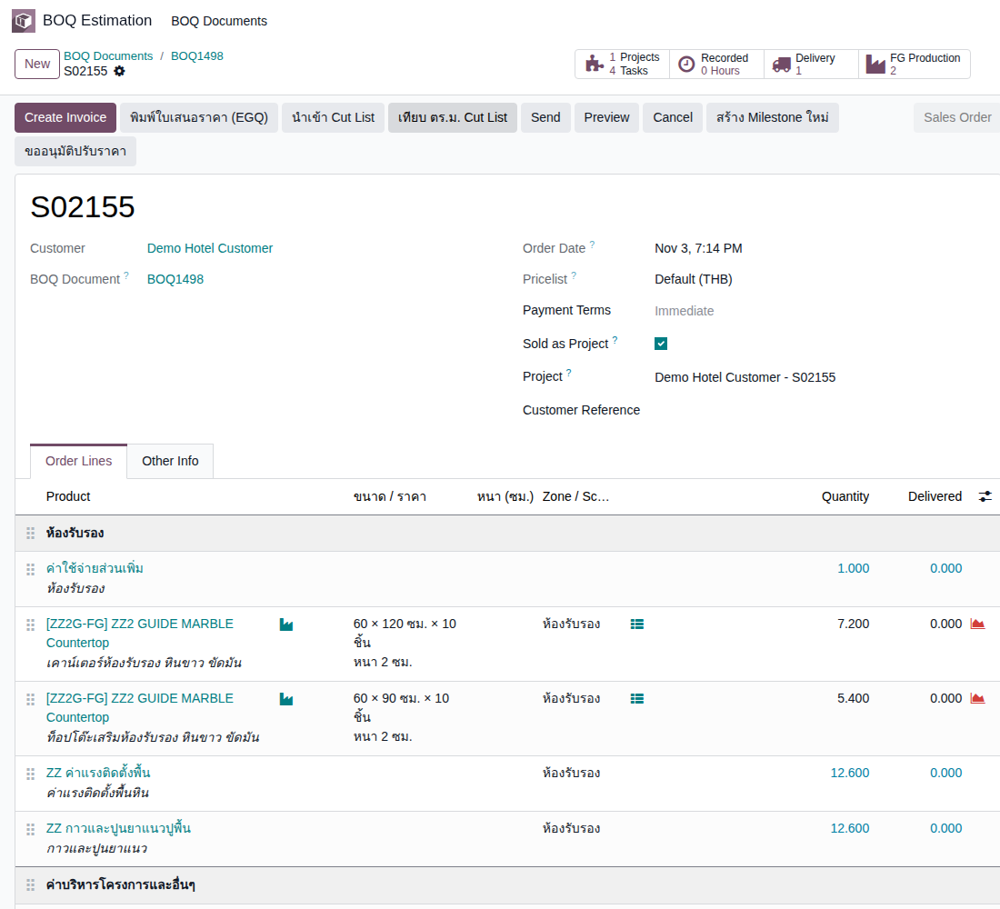 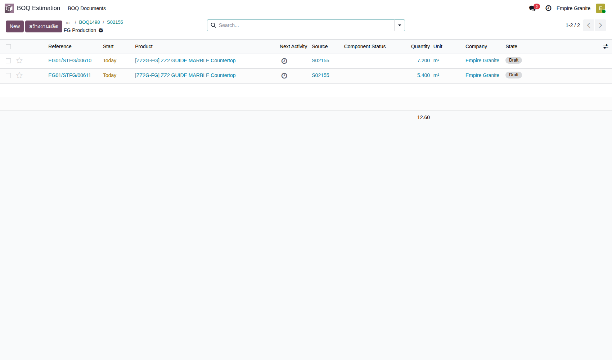 |
| TC-GP-BQ6-09 | ผลิตใบสั่งผลิตใบแรก (7.2 ตร.ม.) จนเสร็จ Slab ต้องอยู่ที่สถานีตัดก่อน Confirm (ปุ่ม ย้ายไปสถานีตัด) · หลังกดผลิต FG เสร็จ ถ้าหน้าจอยังโชว์ Confirmed ให้รีเฟรช |
ทำ TC-GP-BQ6-08 เสร็จแล้ว |
|
- | ต้องใช้ 7.92 ตร.ม. · Slab ที่เลือก 8.70 ตร.ม. ป้าย พอ · หลัง Confirm สถานะ Confirmed · ผลผลิต FG 0.60 × 1.20 × 10 ชิ้น · สถานะสุดท้าย Done | High | 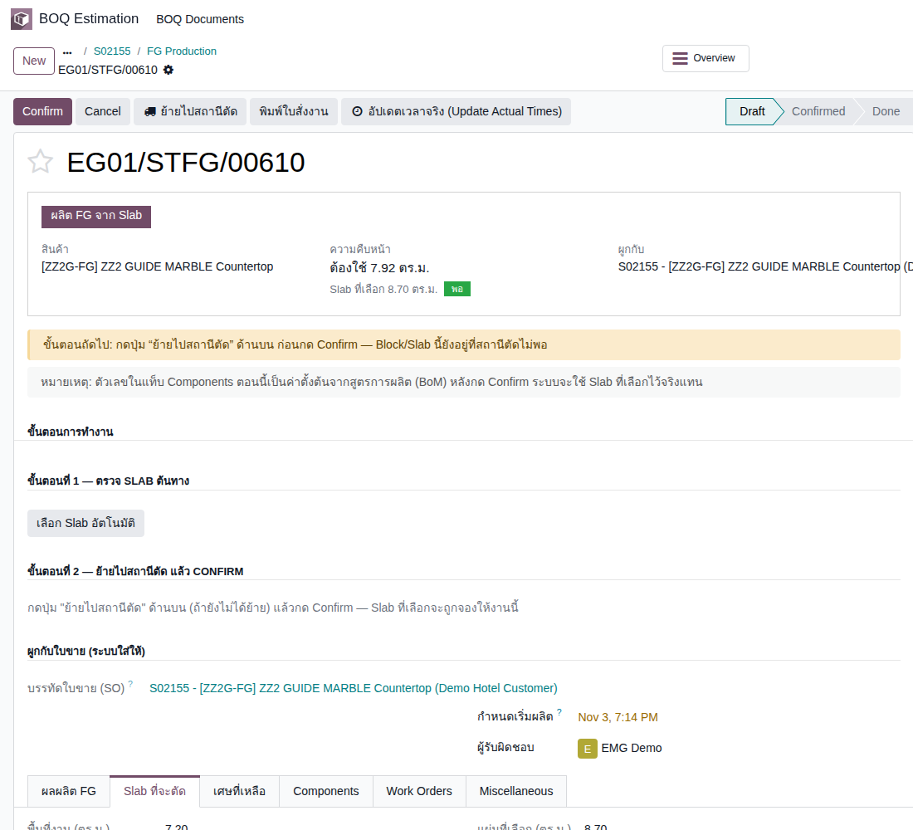 |
| TC-GP-BQ6-10 | ผลิตใบสั่งผลิตใบที่สอง (5.4 ตร.ม.) จนเสร็จ ต้องผลิตครบทั้งสองใบ ต้นทุนค่าแรง/วัสดุของโซนจึงลงครบ |
ทำ TC-GP-BQ6-09 เสร็จแล้ว |
|
- | สถานะสุดท้าย Done | High | 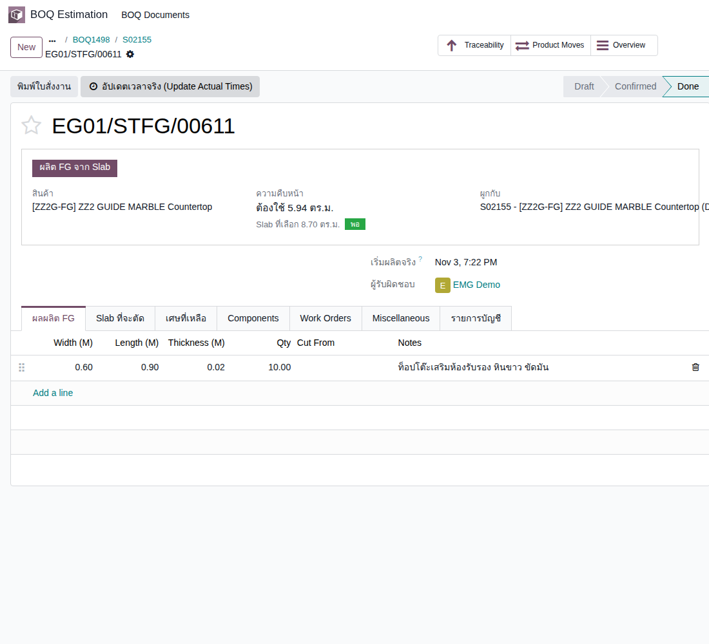 |
E. ต้นทุนค่าแรง/วัสดุ แบ่งตามสัดส่วนที่ผลิตจริง
ตรวจรายการบัญชีของใบสั่งผลิตทั้งสองใบ · 3 test cases
| TC ID | Scenario | Precondition | Steps | ข้อมูลตัวอย่าง | Expected Result | Priority | ภาพหน้าจอ |
|---|---|---|---|---|---|---|---|
| TC-GP-BQ6-11 | ใบสั่งผลิตใบแรก ลงต้นทุนค่าแรง/วัสดุของ BOQ ตามสัดส่วน 57.14% ต้นทุน = Cost ของสินค้า × จำนวนในบรรทัด × (พื้นที่ที่ใบนี้ผลิต ÷ พื้นที่หินรวมของโซน) · ตัวอย่างอธิบาย: โซนหิน 100 ตร.ม. ค่าแรง 20,000 ผลิต 40 และ 60 ตร.ม. → 8,000 และ 12,000 รวม 20,000 ไม่ลงซ้ำ · FG Production Labor 10,800 เป็นค่าแรงผลิตมาตรฐานของหมวดสินค้า (1,500 ต่อ ตร.ม.) เป็นคนละเรื่องกับ BOQ Labour |
ทำ TC-GP-BQ6-10 เสร็จแล้ว |
|
ใบนี้ผลิต 7.2 จาก 12.6 ตร.ม. = 57.14% | 5 รายการ Posted: Inventory Valuation 8,145.59 สองรายการ · FG Production Labor 10,800.00 · BOQ Labour — ห้องรับรอง — ZZ ค่าแรงติดตั้งพื้น 3,600.00 (500 × 12.6 × 57.14%) · BOQ Consumables — ห้องรับรอง — ZZ กาวและปูนยาแนวปูพื้น 648.00 (90 × 12.6 × 57.14%) · ยอดรวม 31,339.18 | High | |
| TC-GP-BQ6-12 | ใบสั่งผลิตใบที่สอง ลงต้นทุนส่วนที่เหลือ 42.86% | ทำ TC-GP-BQ6-11 เสร็จแล้ว |
|
ใบนี้ผลิต 5.4 จาก 12.6 ตร.ม. = 42.86% | FG Production Labor 8,100.00 · BOQ Labour 2,700.00 (500 × 12.6 × 42.86%) · BOQ Consumables 486.00 (90 × 12.6 × 42.86%) · Inventory Valuation 8,145.59 สองรายการ · ยอดรวม 27,577.18 | High | 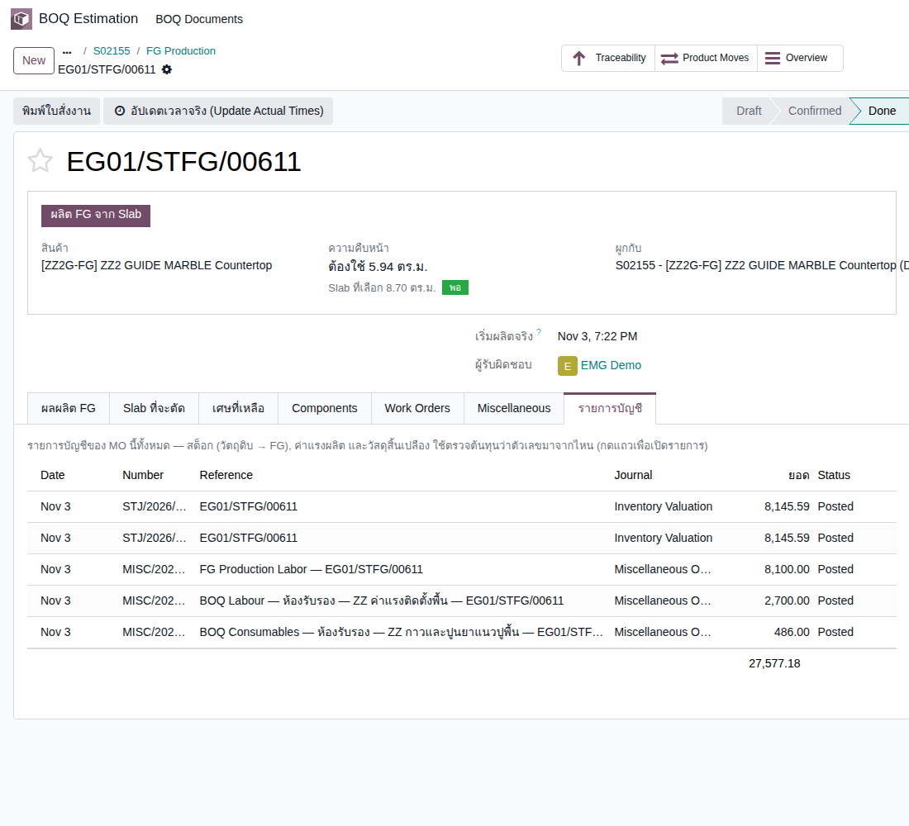 |
| TC-GP-BQ6-13 | ผลรวมต้นทุนค่าแรง/วัสดุของสองใบเท่ากับต้นทุน × จำนวนในบรรทัด ไม่ลงซ้ำ จุดตรวจสำคัญของระบบใหม่: ถ้าผลรวมไม่เท่ากัน แสดงว่าลงซ้ำหรือตกหล่น |
ทำ TC-GP-BQ6-11 และ TC-GP-BQ6-12 เสร็จแล้ว |
|
- | ค่าแรง 3,600.00 + 2,700.00 = 6,300.00 (= 500 × 12.6) · วัสดุ 648.00 + 486.00 = 1,134.00 (= 90 × 12.6) | High |
F. ส่งของ ใบแจ้งหนี้ และกำไร (P&L)
ส่งของ · ออกใบแจ้งหนี้ · ดูกำไรของ BOQ ใบนี้ · 3 test cases
| TC ID | Scenario | Precondition | Steps | ข้อมูลตัวอย่าง | Expected Result | Priority | ภาพหน้าจอ |
|---|---|---|---|---|---|---|---|
| TC-GP-BQ6-14 | ส่งของให้ลูกค้า (Validate ใบส่งของ) วัสดุที่เป็นสินค้า Goods (กาวและปูนยาแนว) ขึ้นเป็นแถวในใบส่งของด้วย เพราะสินค้านี้ไม่ติดตามสต็อกจึงไม่เกิดมูลค่าสต็อกซ้ำ ต้นทุนวัสดุลงจากใบสั่งผลิตเท่านั้น (คำถามค้างบัญชี: ตั้งเป็น Goods หรือ Service) |
ทำ TC-GP-BQ6-10 เสร็จแล้ว |
|
- | ใบส่งของ (รอบทดสอบ EG01/OUT/00941) Ready ก่อนกด มี 3 แถว: FG 7.200 m² · FG 5.400 m² · ZZ กาวและปูนยาแนวปูพื้น 12.600 m² · หลัง Validate สถานะ Done | High | 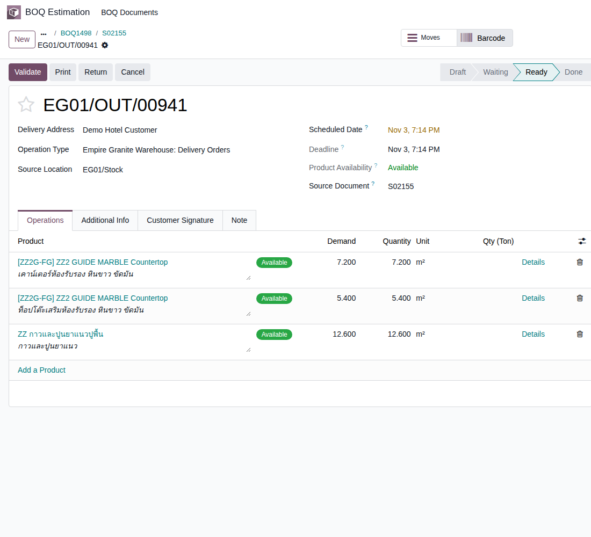 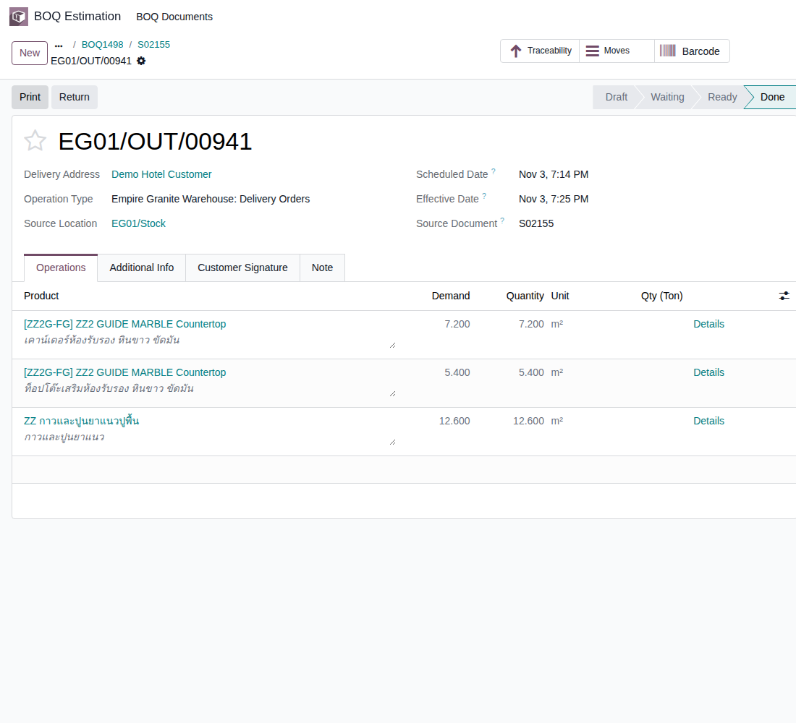 |
| TC-GP-BQ6-15 | ออกใบแจ้งหนี้และ Post | ทำ TC-GP-BQ6-14 เสร็จแล้ว |
|
Create Invoice = Regular invoice | ใบแจ้งหนี้ (รอบทดสอบ INV/2026/00029) Posted · หิน 7.200 และ 5.400 m² · ค่าแรง 12.600 m² × 1,500.00 · วัสดุ 12.600 m² × 150.00 · ขนส่ง 8,000.00 · ค่าบริหารโครงการ 7,667.00 · ก่อน VAT 84,337.00 · VAT 7% 5,903.59 · รวม 90,240.59 · Amount Due 90,240.59 | High | 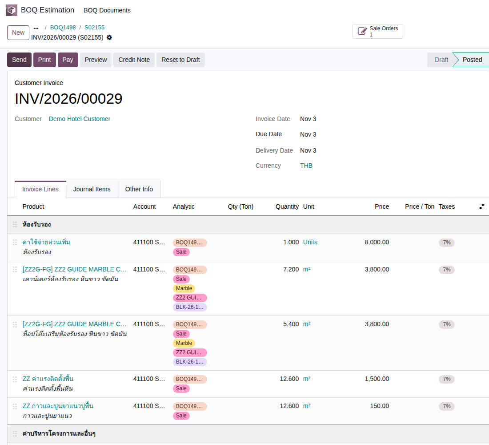 |
| TC-GP-BQ6-16 | ดูกำไรของ BOQ ใบนี้ใน Profit and Loss ค่าแรงผลิต 18,900.00 + BOQ Labour 6,300.00 = 25,200.00 ในบัญชีเดียวกัน (511120) · คำถามค้างบัญชี: ค่าแรงติดตั้งหน้างานควรลง 511140 แทนหรือไม่ · คอลัมน์ Total คือทุกงานรวมกัน อย่าสับสน |
ทำ TC-GP-BQ6-15 เสร็จแล้ว · ติ๊ก Sold as Project ไว้ (TC-GP-BQ6-07) |
|
Analytic = BOQ1498 - Demo Hotel Customer | คอลัมน์ BOQ1498: Revenue 84,337.00 (411100) · 511110 COGS - Stone Sales 16,291.18 · 511120 COGS - FG Production (Fabrication) 25,200.00 · 511130 COGS - FG Production (Consumables) 1,134.00 · Less Costs of Revenue 42,625.18 · Gross Profit 41,711.82 · Net Profit 41,711.82 | High | 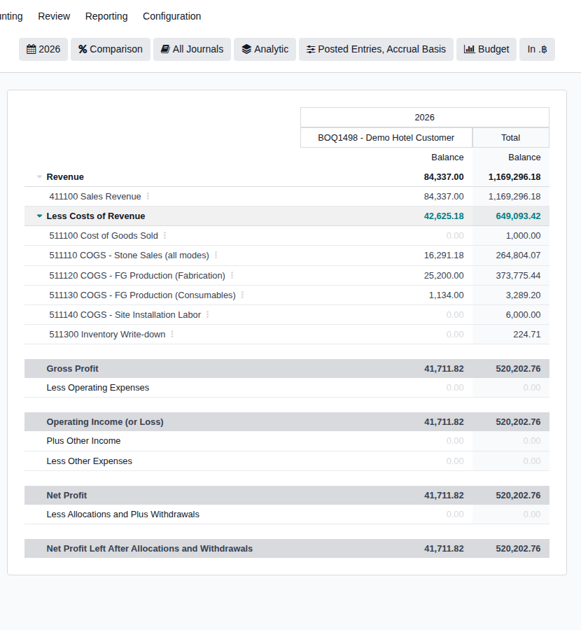 |